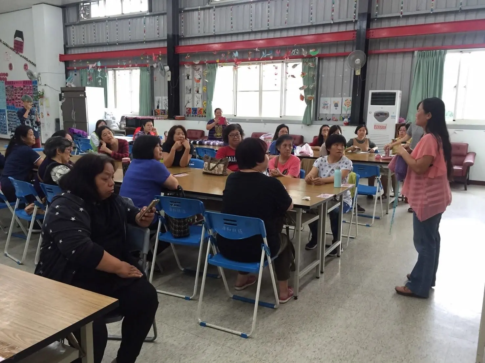
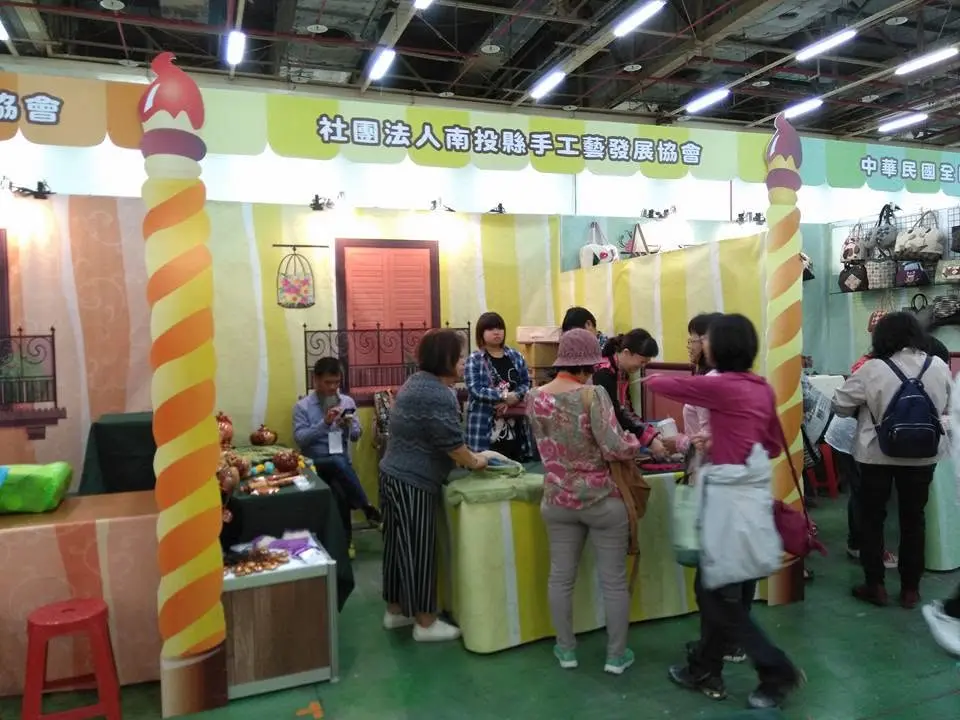
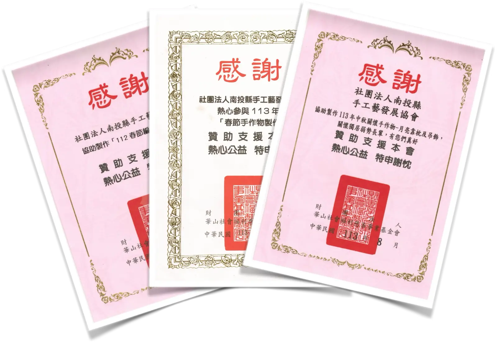

{% if ext != '' %}{% if n.signup_label and n.signup_label != '' %}{{ n.signup_label }}{% else %}報名/簡章下載{% endif %} ↗{% elsif n.signup and n.signup != '' %}報名這堂課{% endif %}
看詳細
NEWS — 最新消息
{% assign items = site.news | where_exp: "n", "n.draft != true" | sort: "date" | reverse %}
{% if items.size == 0 %}近期課程與活動
新的課程即將公布，也歡迎先填寫報名表告訴我們你想上的課程。
{% endif %}
{% for n in items limit:3 %}{% assign ext = '' %}{% if n.signup_url and n.signup_url != '' %}{% assign ext = n.signup_url %}{% elsif n.course_code and n.course_code != '' %}{% capture ext %}https://ojt.wda.gov.tw/ClassSearch/Detail?OCID={{ n.course_code | strip }}&plantype=1{% endcapture %}{% endif %}{% assign is_course = false %}{% if n.category == "課程" %}{% assign is_course = true %}{% endif %}
{% if n.poster and n.poster != '' %} {% endif %}
{% endif %}
{{ n.title }}
{% endfor %}
01 — 關於本協會
關於我們
社團法人南投縣手工藝發展協會致力於推廣地方工藝文化，結合文化教育、人才培育、社區服務與公益資源，透過課程、展覽、體驗活動及跨領域合作，推動手工藝的傳承與創新。
我們相信，工藝不僅是技藝的延續，更承載著生活美學、文化記憶與社區情感，因此長期深耕在地，陪伴居民、親子、樂齡族群及教育工作者共同學習與成長，讓手工藝融入生活，成為促進文化傳承、世代交流與地方永續發展的重要力量。
我們期望持續整合各界資源，建立完善的手工藝培育與推廣機制，打造南投縣具專業、公信力與影響力的手工藝培訓與推廣平台。
願景
成為南投縣手工藝人才培育、文化傳承與公益教育的重要推動者，讓工藝成為連結人、土地與文化的永續力量。
基本資料
- 名 稱社團法人南投縣手工藝發展協會
- 現 址南投縣南投市民族路609巷29號2樓
- 電 話0921-399 913
- 信 箱admin@ntcraft.org
- 立案日期民國94年11月5日
- 立案字號府社政字第09402359210號
- 統一編號09245913
- 官方網站ntcraft.org



中期經營目標（114～116年）
持續朝向中期經營目標邁進，深化訓練品質、人才培育、社區服務與公益行動。
- 持續完善訓練品質管理，朝 TTQS 銀牌目標邁進。
- 推動第二專長與進階技能訓練，協助學員銜接專業認證。
- 發展品牌化、系統化的手工藝課程與人才培育模式。
- 持續拓展社區照顧關懷據點及樂齡學習合作。
- 持續推動「巧手做公益」，讓工藝學習成果回饋社會。
宗旨與任務
以工藝連結人、生活與地方文化
本會以推廣手工藝、培育人才、促進生活美學及投入公益教育為核心，持續回應社區、家庭與不同年齡層的學習需求。
本會宗旨
推廣及傳承手工藝技能，整合公益資源與文化教育，建立南投縣具專業、公信力與影響力的手工藝培訓與推廣平台。
主要任務
MISSION 01
推廣手工藝學習
辦理手工藝研習、觀摩、講座、聯誼及解說訓練，提升民眾對工藝的興趣與理解。
MISSION 02
促進生活美學
辦理地方生活休閒活動，讓工藝融入日常，豐富民眾生活內涵。
MISSION 03
社教與技能培力
配合政府政策辦理社教研習與專業技能訓練，支持人才持續學習。
MISSION 04
公益推廣服務
接受委託辦理手工藝推廣及公益活動，讓工藝資源進入社區。
MISSION 05
社區與家庭關懷
關注社區人文、幼兒與兒童、家庭、教保人員及樂齡族群的教育與福祉。
MISSION 06
文化永續傳承
促進世代交流與地方文化延續，推動符合本會宗旨的相關服務。